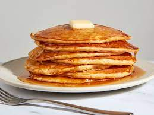

Pancakes

Go back to Homepage
Description
Ah, pancakes, truly a divine staple of breakfast cuisine.
What could be better than flour, eggs, milk, and other ingredients colliding together and taking shape on a greased up skillet?
No one questions the majesty that pancakes possess, but how can we obtain this magical meal for ourselves?
Follow the recipe below to find out!
ingredients
- 1 1/2 cups all-purpose flour
- 3 1/2 tsp baking powder
- 1 tbsp white sugar
- 1/4 tsp salt, or more to taste
- 1 1/4 cups milk
- 3 tbsp butter, melted
- 1 egg
Steps
- Sift flour, baking powder, sugar, and salt together in a large bowl. Make a well in the center and add milk, melted butter, and egg; mix until smooth.
-
Heat a lightly oiled griddle or pan over medium-high heat.
Pour or scoop the batter onto the griddle, using approximately 1/4 cup for each pancake; cook until bubbles form and the edges are dry, about 2 to 3 minutes.
Flip and cook until browned on the other side. Repeat with remaining batter.